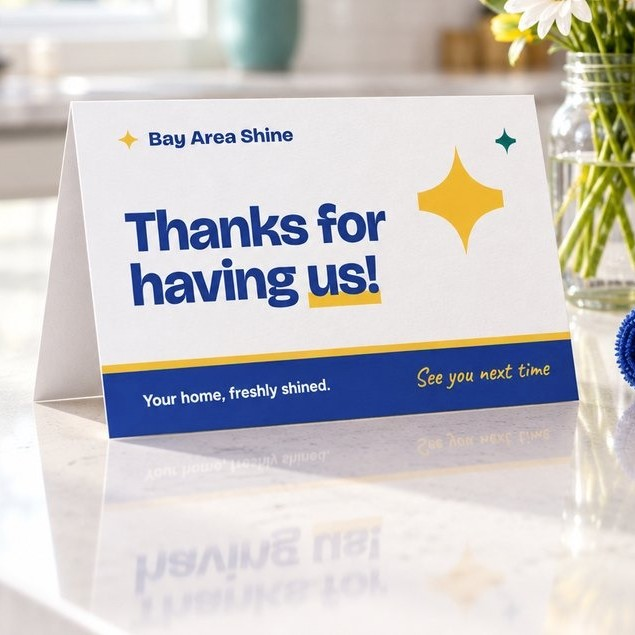

Should you tip your house cleaner?
Tipping a house cleaner is a personal choice, not a rule. Here's how to think about it, and how it works when you book with us.

Is a tip expected?
No. A tip is a thank-you for great work, not part of the price. With us, your cleaner is paid for the clean either way.
When people often tip
- After a deep clean or a move-out clean, which are bigger jobs.
- When the cleaner went beyond the list.
- Around the holidays, for a regular cleaner.
- After a clean with extra challenges, like lots of pet hair.
How much?
There's no set amount. Some people tip a flat amount each visit, some tip a share of the price, and some tip at the holidays instead of every visit. Choose what feels right for the work.
How tips work with Bay Area Shine
- Add a tip when you book in the app: $10, $20, $30, another amount, or no tip. Nothing is chosen for you.
- 100% of every tip goes to your cleaner, on top of their pay. We pay the card fee.
- The tip is charged after the clean, and never if the clean is cancelled or doesn't happen.
- You can raise it before the clean, and add more up to 14 days after.
- Once you've booked, the tip can't be lowered, because cleaners see it when they choose a job.
Tip in the app, 100% to your cleaner
Add a tip when you book or after the clean. Every dollar goes to the cleaner who did the work.
- Book your clean and see the price before you pay.
- See who's coming before the day: first name, photo, rating and reviews.
- Follow it on the day: on the way, arrived, all done.
- Get your Shine Report: photos of each room, so you can see the difference.
No download needed: book in the web app on any device. An iPhone app on the App Store will follow.